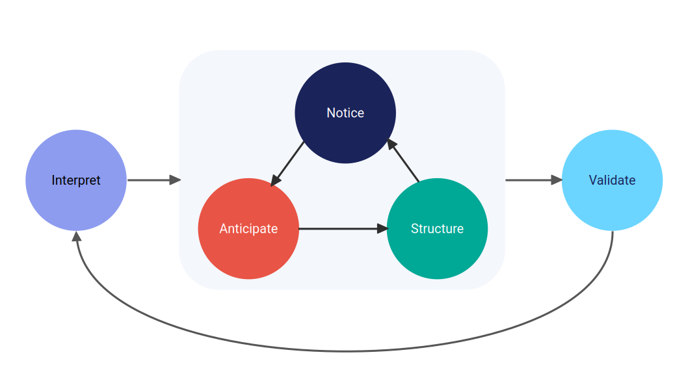

From Friction to Flow: Designing Smarter Dashboards with {bidux}
Introducing {bidux}: A toolkit that helps developers design dashboards grounded in cognitive and behavioral science
Software Development
User Experience
Published
June 19, 2025
🚀 {bidux} v0.1.0 is live on CRAN! Users don’t just see your dashboard: They interpret it, navigate it, and act (or fail to act) based on it. That’s not just design; it’s cognition. Learn more below or explore the repo: github.com/jrwinget/bidux
Why UX Is Too Often an Afterthought
In data analytics and dashboard development, we often get the logic right: The data is clean, the calculations are correct, and the visualizations are technically sound. But when the dashboard goes live, something breaks.
Users ignore insights. Or worse, they disengage entirely.
This isn’t a reflection of poor technical work. It’s a sign that something deeper is missing: A bridge between how we design interfaces and how people actually think.
Most developers aren’t trained in psychology or UX. That’s not a failing; it’s a gap in the pipeline. Users interpret our tools through human lenses: They carry cognitive limitations, rely on mental shortcuts, and make judgments shaped by emotion, context, and bias.
To design dashboards that not only work, but resonate, we need to design for the mind, not just the machine.
A New Starting Point: BID + {bidux}
The Behavior Insight Design (BID) framework offers a structured, evidence-based approach to building more intuitive, cognitively supportive dashboards. Developed at the intersection of behavioral science, data storytelling, and interface design, BID maps out five stages that reflect how users actually engage with information:

Each stage helps developers reduce friction, surface insight, and support better decision-making, even without a background in psychology or UX.
The {bidux} R package makes this framework practical for developers. It provides a step-by-step workflow, concept dictionaries, and component suggestions that bring behavioral design directly into your Shiny development process.
Together, BID and {bidux} help you turn psychological friction into flow.
What Makes BID Different?
Most design systems focus on aesthetics or layout heuristics. BID starts earlier by asking what your user needs to think, feel, and decide at each stage of interaction.
BID is grounded in cognitive psychology, decision science, and information processing theory. It doesn’t just tell you what to build; it explains why certain design choices succeed or fail, based on decades of empirical research.
And while other frameworks often isolate usability issues or user behavior, BID treats these mechanisms as dynamically linked. For instance:
How cognitive load affects susceptibility to bias
How early layout decisions shape later interpretations
How interface design impacts individual and group coordination
{bidux} brings this theory into practice, giving you the tools to identify friction points, document key decisions, and structure your dashboard with the user’s cognition in mind.
The Five BID Stages (with {bidux} Examples)
1️⃣ Interpret the User’s Needs
Goal: Center your design around the core questions users are trying to answer.
Users don’t want every chart: They want clarity about what matters, and often more importantly, what to do about it.
Code
stg_interpret <-bid_interpret(central_question ="Where are sales underperforming?",data_story =list(hook ="...", tension ="...", resolution ="..."))## Stage 1 (Interpret) completed.## - Central question: Where are sales underperforming?## - Your data story is almost complete (75%). Consider adding: context.## - Your central question is appropriately scoped.## - No user personas defined
Try: Structuring the app like a narrative; defining user personas to anchor your story.
2️⃣ Notice the Problem
Goal: Identify where users struggle cognitively, visually, or emotionally.
Most friction stems from overload: Too many filters, unclear hierarchies, or competing focal points.
Code
# install.packages("bidux")# library(bidux)stg_notice <-bid_notice( stg_interpret,problem ="Users can't find the key metrics",evidence ="70% of testers took >30s locating the primary KPI")## Auto-suggested theory: Cognitive Load Theory (confidence: 90%)## Stage 2 (Notice) completed. (40% complete)## - Problem: Users can't find the key metrics## - Theory: Cognitive Load Theory (auto-suggested)## - Evidence: 70% of testers took >30s locating the primary KPI## - Theory confidence: 90%## - Next: Use bid_anticipate() for Stage 3
Try: Swapping dropdowns for grouped radio buttons; surfacing KPIs higher in the layout.
3️⃣ Anticipate User Behavior
Goal: Account for predictable biases in how users interpret and interact with data.
People often anchor on the first number they see, seek out confirming evidence, and interpret identical outcomes differently depending on how they’re framed
Code
stg_anticipate <-bid_anticipate(stg_notice)## Stage 3 (Anticipate) completed.## - Bias mitigations: 4 defined## - Accessibility considerations included## - Key suggestions: Anchoring mitigation: Always show reference points like previous period, budget, or industry average, Framing mitigation: Toggle between progress (65% complete) and gap (35% remaining) framing, Confirmation Bias mitigation: Include alternative views that might challenge the main narrative
Try: Showing both “65% complete” and “35% remaining”; providing scenario toggles to challenge assumptions.
4️⃣ Structure the App
Goal: Organize layout and flow to reduce decision errors and guide attention.
Code
stg_structure <-bid_structure(stg_anticipate)## Warning: Layout auto-selection is deprecated and will be removed in bidux## 0.4.0. The BID framework will focus on concept-based suggestions instead.## Existing code will continue to work until 0.4.0.## Stage 4 (Structure) completed.## - Auto-selected layout: breathable## - Concept groups generated: 3## - Total concepts: 3
Try: Grouping filters near relevant charts; using bslib::card_body(padding = 4) for visual spacing.
5️⃣ Validate & Empower the User
Goal: Reinforce clarity, support confidence, and enable action (individually or as a team).
Code
stg_validate <-bid_validate(stg_anticipate)## Stage 5 (Validate) completed.## - Summary panel: Dashboard provides clear summary of key insight...## - Collaboration: Enable team sharing and collaborative decision-...## - Next steps: 11 items defined## - Consider adding user empowerment tools to enhance collaboration
Try: Ending with a clear takeaway panel; adding next-step checklists or shareable reports.
Try It Out
Example flow:
Code
library(bidux)# Align the dashboard with user goalsworkflow <-bid_interpret(central_question ="Which products underperformed?") |># Identifying user friction pointbid_notice(problem ="Too many filters",evidence ="Users forget the currently selected options" ) |># Address predictable cognitive biases (leave blank for auto-suggestions)bid_anticipate(bias_mitigations =list(anchoring ="Include prior year as reference",confirmation_bias ="Show competing explanations" ) ) |># Design information structurebid_structure() |># Reinforce clarity and enable collaborationbid_validate(summary_panel ="Key takeaways with export")## Stage 1 (Interpret) completed.## - Central question: Which products underperformed?## - Your data story has all key elements. Focus on making each component compelling and relevant.## - Your central question is appropriately scoped.## - No user personas defined ## Auto-suggested theory: Hick's Law (confidence: 90%)## Stage 2 (Notice) completed. (40% complete)## - Problem: Too many filters## - Theory: Hick's Law (auto-suggested)## - Evidence: Users forget the currently selected options## - Theory confidence: 90%## - Next: Use bid_anticipate() for Stage 3## Stage 3 (Anticipate) completed.## - Bias mitigations: 3 defined## - Accessibility considerations included## - Key suggestions: Anchoring mitigation: Always show reference points like previous period, budget, or industry average, Confirmation_bias mitigation: Consider how this bias affects user decisions, Accessibility mitigation: Test color combinations with WebAIM's contrast checker to meet WCAG standards## Warning: Layout auto-selection is deprecated and will be removed in bidux## 0.4.0. The BID framework will focus on concept-based suggestions instead.## Existing code will continue to work until 0.4.0.## Stage 4 (Structure) completed.## - Auto-selected layout: breathable## - Concept groups generated: 3## - Total concepts: 3## Stage 5 (Validate) completed.## - Summary panel: Key takeaways with export## - Collaboration: Enable team sharing and collaborative decision-...## - Next steps: 11 items defined## - Ensure summary panel includes actionable insights Consider adding user empowerment tools to enhance collaboration
Better dashboards aren’t just more attractive; they’re more intelligible. They reduce unnecessary decisions, anticipate user confusion, and surface what matters.
The BID framework gives developers a behavioral lens. {bidux} gives them the tools to act on it.
You don’t need a psychology degree to design with cognitive empathy, just the right questions and the right support. {bidux} helps you ask both.
Happy designing! 🚀
Citation
BibTeX citation:
@online{2025,
author = {},
title = {From {Friction} to {Flow:} {Designing} {Smarter} {Dashboards}
with \{Bidux\}},
date = {2025-06-19},
url = {https://www.jrwinget.com/blog/2025-06-19-from-friction-to-flow/},
langid = {en}
}